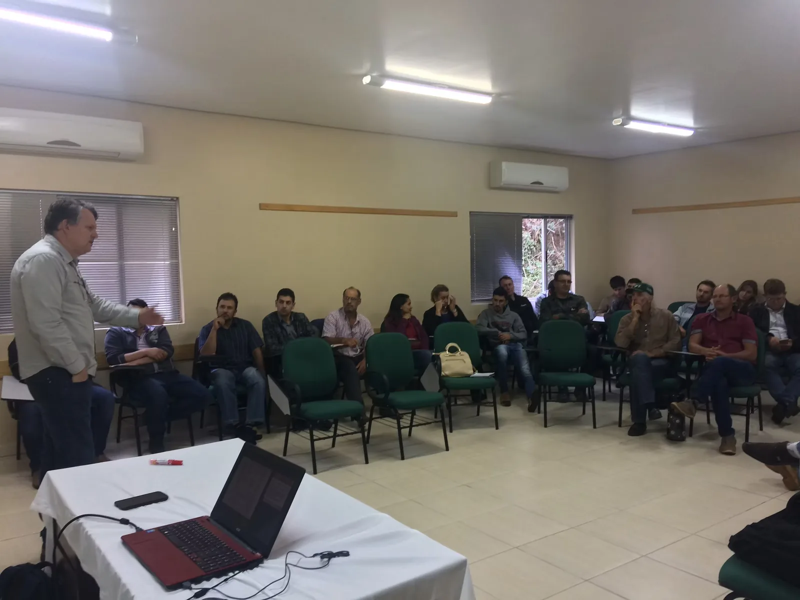
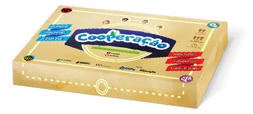
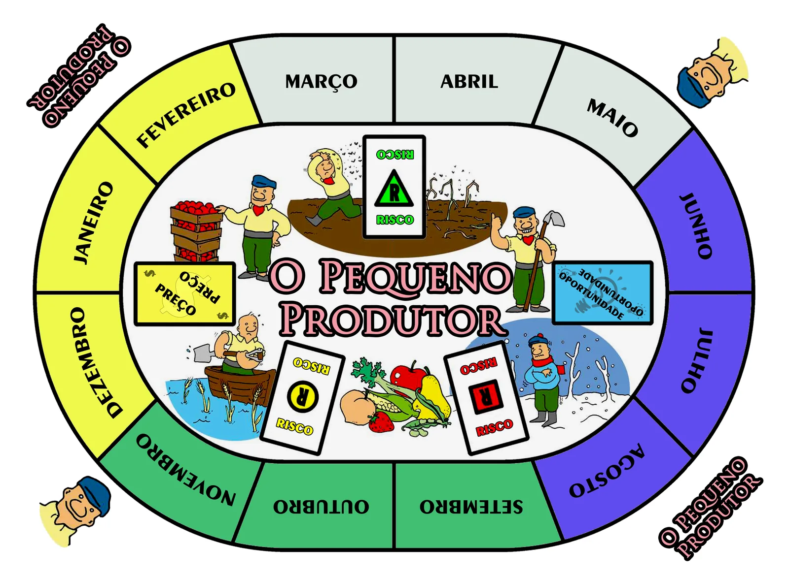
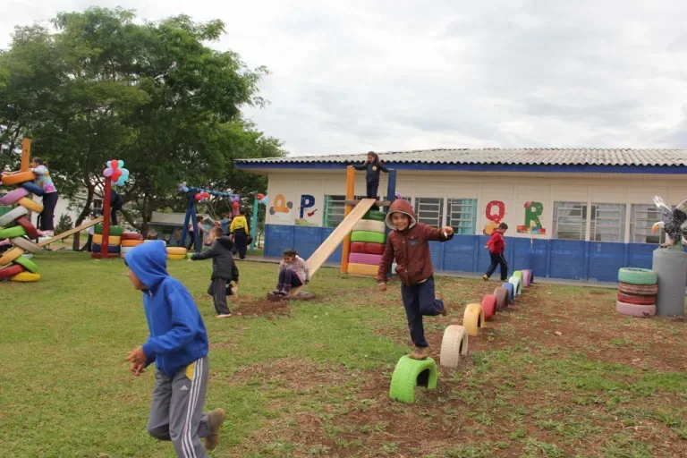
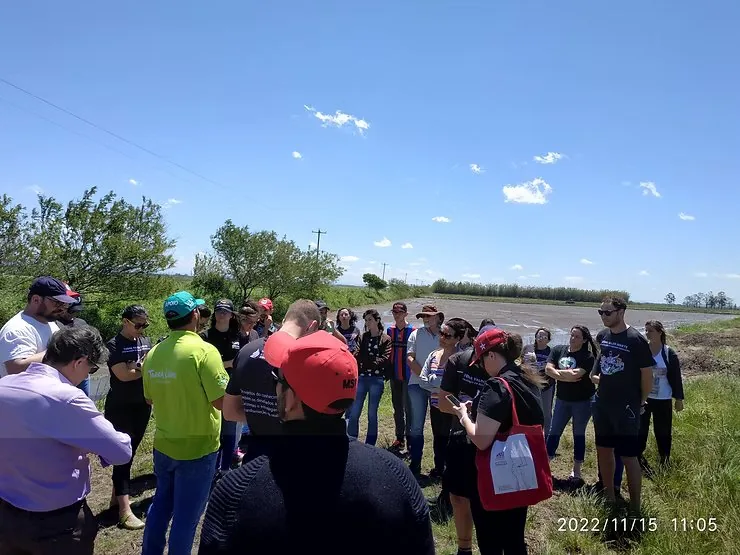

Em andamento
Acompanhamento de Cooperativas 2026
Projeto de acompanhamento, pesquisa e extensão junto a cooperativas e organizações cooperativas.
Cooperativismo · Economia solidáriaProjetos de pesquisa, extensão, formação e desenvolvimento articulam o trabalho do NECOOP com universidades, organizações, comunidades e territórios.

Projeto de acompanhamento, pesquisa e extensão junto a cooperativas e organizações cooperativas.
Cooperativismo · Economia solidária
Desenvolvimento de um jogo educativo sobre cooperação, a partir de uma plataforma de tabuleiro.
Cooperativismo · Educação e formação Conhecer o projeto →
Desenvolvimento de jogo educativo relacionado ao planejamento agrícola, produção e comercialização.
Agroecologia · Educação e formação Conhecer o projeto →
Tradução, adaptação e desenvolvimento de dinâmicas relacionadas à cooperação para utilização em processos educativos.
Cooperativismo · Educação e formação
Organização, atualização e desenvolvimento do site do NECOOP e de uma estrutura de observação e divulgação do Núcleo.
Pesquisa · Comunicação